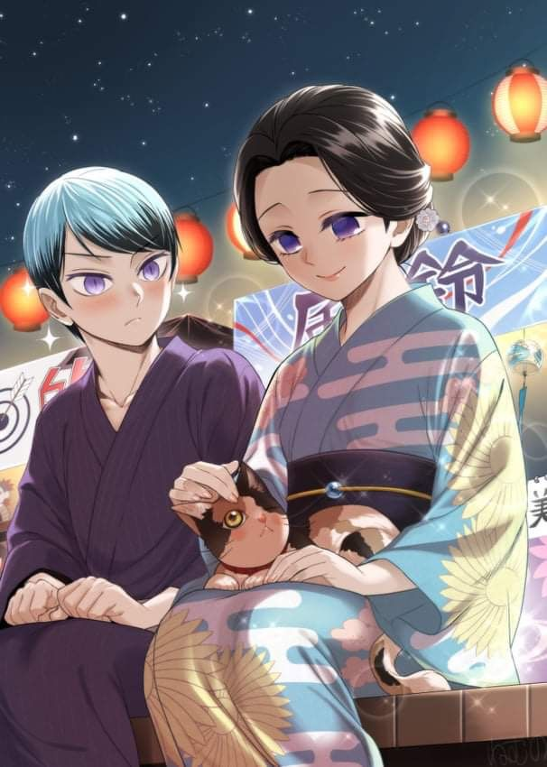

Tamayo e Yushiro
Tamayo e Yushiro são personagens intrigantes de Demon Slayer (Kimetsu no Yaiba), que desempenham papéis cruciais na luta contra os demônios, apesar de também serem demônios.
Tamayo e Yushiro são personagens intrigantes de Demon Slayer (Kimetsu no Yaiba), que desempenham papéis cruciais na luta contra os demônios, apesar de também serem demônios.
Tamayo é uma oni de aparência gentil e sofisticada. Antiga assistente de Muzan Kibutsuji, o Rei dos Demônios, ela conseguiu se
libertar de sua influência e passou a dedicar sua existência a encontrar uma maneira de derrotá-lo. Tamayo é uma médica talentosa e
uma das poucas demônios capazes de sobreviver sem consumir sangue humano, o que a torna uma aliada valiosa para Tanjiro Kamado e sua
missão de destruir Muzan e salvar sua irmã Nezuko.
Ao longo de séculos, Tamayo usou seu conhecimento médico e científico para estudar o sangue dos demônios, buscando uma cura para o
estado demoníaco e uma forma de enfraquecer Muzan. Sua personalidade é calma e compassiva, mas por trás de sua aparência serena, há
uma determinação feroz para se vingar de Muzan, por ter transformado sua vida e a de tantos outros em um pesadelo.
Motivações: Derrotar Muzan
Técnica: Kekkijutsu de feitiço de sangue
Altura: 150cm
Idade: +500
Yushiro é um jovem demônio que foi transformado por Tamayo, tornando-se seu fiel seguidor e aprendiz. Inicialmente, ele tinha uma
personalidade rude e era muito protetor com Tamayo, chegando a ser hostil com Tanjiro e seus amigos. Contudo, ele demonstra um
profundo respeito e lealdade a Tamayo, a quem ele adora de forma quase obsessiva.
Yushiro possui habilidades únicas como demônio, sendo capaz de manipular papéis especiais chamados de ofuda para criar ilusões e
camuflar sua presença, além de ser imune a muitas técnicas demoníacas graças à sua conexão com Tamayo. Sua devoção a ela é tão
intensa que ele declara abertamente que sua vida não tem significado sem Tamayo.
Motivações: Derrotar Muzan e ficar ao lado de Tamayo
Técnica: Kekkijutsu olhos vendados
Altura: 157cm
Idade: 35
A relação entre Tamayo e Yushiro é uma mistura complexa de mestre e discípulo, onde o respeito mútuo é evidente, mas também há uma forte ligação emocional. Enquanto Tamayo vê Yushiro como um aliado e talvez até como uma responsabilidade por tê-lo transformado, Yushiro a vê como uma figura quase divina, dedicando sua vida à sua proteção e objetivos. Apesar de serem demônios, ambos trabalham incansavelmente para ajudar a destruir Muzan e acabar com o sofrimento que ele causou ao mundo. A dedicação de Tamayo à pesquisa e o apoio incansável de Yushiro mostram que, mesmo como demônios, eles mantêm uma humanidade que os separa dos outros seres de sua espécie. Em suma, Tamayo e Yushiro são personagens que personificam a luta pela redenção e vingança, mostrando que até mesmo entre os demônios há aqueles que desejam lutar pelo bem maior.